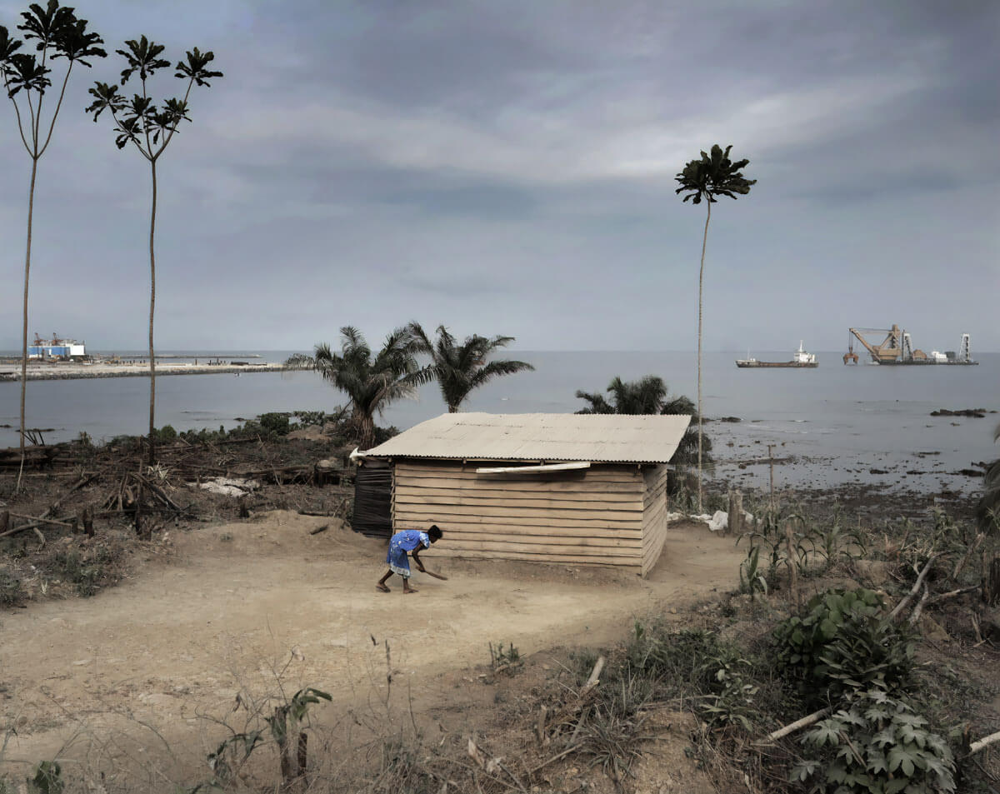

Best Modern Photographers of October 2020
What better way to improve your own work than to be inspired by others? I am absolutely convinced that discovering new portfolios on a regular basis helps educate your eye and have a better understanding of the possibilities that photography offers. Contemplating amazing images, in addition to being a pleasure, is a very good way to develop your "photographic eye", that little extra thing that will make your photos stand out. Each month we continue to discover incredible work from photographers that live and travel all around the world. Here is a selection of some incredible images of modern photographers for this month of October 2020 you can get some creative inspiration from.
Reinout van den Bergh
The Netherlands
Reinout van den Bergh (Wageningen, the Netherlands, 1957) studied photography and audiovisual design at St. Joost School of Fine Art and Design in Breda, the Netherlands. Since 1982 he has been working from Breda as a photographer and audiovisual designer. In this capacity he has travelled throughout Europe, Africa, Asia, the Middle East, the USA and Latin America. He worked for various ethnographical museums and for Dutch development cooperation projects. His work has been exhibited in several museums in Eastern and Western Europe and Africa, and published in several books and other publications. The Miners from Beringen (2014) comprises a collection of photgraphs made in the Belgian mining community of Beringen during the 1980s. It was proclaimed as one of the best photobooks of the year by Dutch quality newspaper de Volkskrant. For the long-term project 'Factories' with fellow artist Huib Fens he visited industrial heritage everywhere in Europe. The 'Environment' project is a combination of visual art and photography, for which he cooperated with sculptor Gerhard Lentink, travelling in several European countries. As of 2006 Reinout van den Bergh has been curator of BredaPhoto. He also supervises students and graduates of its International Talent Program.